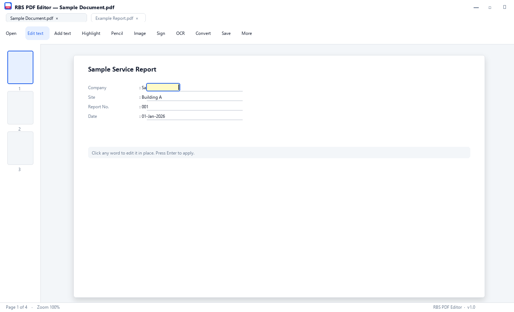

RBS PDF Editor
A free, offline, portable Windows PDF editor. Edit text in place, place images freeform with resize and rotate, OCR scanned papers with Tesseract, sign documents in one click, merge / split / rotate / reorder pages, convert PDF to Word / Excel / JPG / PNG, compress PDFs, add Bates numbering, password protection, hyperlinks and watermarks. Two builds shipped together — a standard installer that registers PDF file associations, and a single-file portable .exe that runs from a USB stick with no install and no admin rights. No account, no cloud, no telemetry, no watermark, no subscription. A genuine free Adobe Acrobat alternative for Windows 10 and Windows 11.
Preview

Key Features
Edit text in place
Click any word on the PDF and the text becomes editable right where it sits — same font, same size, no copy-paste dance.
Place images freeform
Drop in a picture, drag the corner and edge handles to resize, rotate, or snap to page width. Click it later to adjust or delete.
OCR scanned PDFs
Make scans searchable and editable. Tesseract installs itself the first time you ask, then runs offline forever.
One-click signature
Draw your signature once with the mouse. After that, drop it on any document in one click. Saved only on your computer.
Tabs, not windows
Open multiple PDFs in browser-style tabs. Double-clicking a PDF in Explorer opens it as a new tab in the running app.
Carry it on a USB stick
The portable .exe runs from anywhere. Settings travel in a folder next to the file — same setup across every PC you touch.
Convert PDF to Word / Excel
Export to .docx, .xlsx (pulls out tables), .jpg, .png. Compress PDFs to shrink file size without losing readability.
Password & permissions
Protect PDFs with passwords, set print / copy / edit permissions. Add Bates numbering for legal work, watermarks, and hyperlinks.
Page management
Merge, split, rotate, reorder, auto-crop, and number pages. Drag and drop page thumbnails to reorganise.
100% offline & private
No account, no cloud sync, no telemetry, no analytics, no watermark. The only network call is the optional one-time OCR download.
Version History
- Initial public release — installer and portable builds in one ZIP
- Edit text in place — click a word, type the new text, keeps the original font
- Place images freeform with resize, rotate, lock aspect, snap to page width
- OCR scanned PDFs with Tesseract (auto-downloads on first use, offline thereafter)
- One-click signature — draw once, drop on any document
- Multi-PDF tabs — double-click in Explorer adds a new tab
- Stacked OCR-layer detection — cleans up "Regarding Regarding" doubling
- Convert PDF to Word (.docx), Excel (.xlsx), JPG, PNG; compress PDFs
- Page management — merge, split, rotate, reorder, auto-crop, Bates numbering
- Password protection, watermarks, hyperlinks, page numbers
- F1 / Help menu / right-click → guided first-time tour replay
- Portable .exe — no install, runs from USB, settings travel with the file
Frequently asked questions
Is RBS PDF Editor really free?
Does it add a watermark to my PDFs?
Do I need to sign up or create an account?
Does it work offline / without internet?
Can I run it without installing — like from a USB stick?
Is this a good Adobe Acrobat alternative?
Can it edit scanned PDFs (with OCR)?
Can I sign a PDF for free with it?
Can it convert PDF to Word and Excel?
Does it work on Windows 10?
Is OCR included or does it cost extra?
Can it do Bates numbering for legal documents?
Where are my files stored — locally or in the cloud?
Why is the download 216 MB? That is bigger than other PDF editors.
Related reading
Guides and comparisons related to RBS PDF Editor.
More free apps from RBS
Other tools by Rai — all free, all offline, no subscriptions.
A free Windows optimization suite — junk cleaner, startup manager, and performance monitor. Boost performance …
View details →Clone any voice with just a 5-second audio sample. Powered by XTTS v2 AI engine, generate natural-sounding spe…
View details →Major V2 release of the free AI voice cloner. 16 built-in voices plus unlimited custom clones from a 30-second…
View details →Your all-in-one personal productivity command center. 16 widgets — track habits, tasks, finances, weather, sle…
View details →Honest Windows maintenance utility with real numbers, reversible changes, and no fake scores. Clean junk safel…
View details →